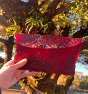
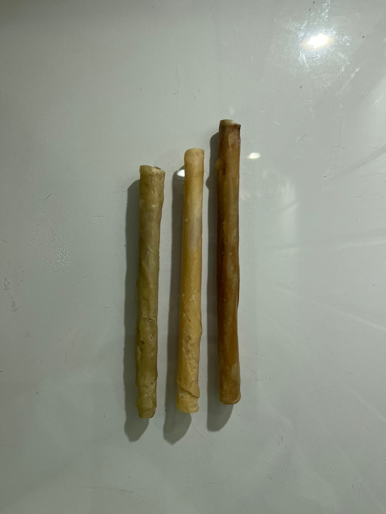
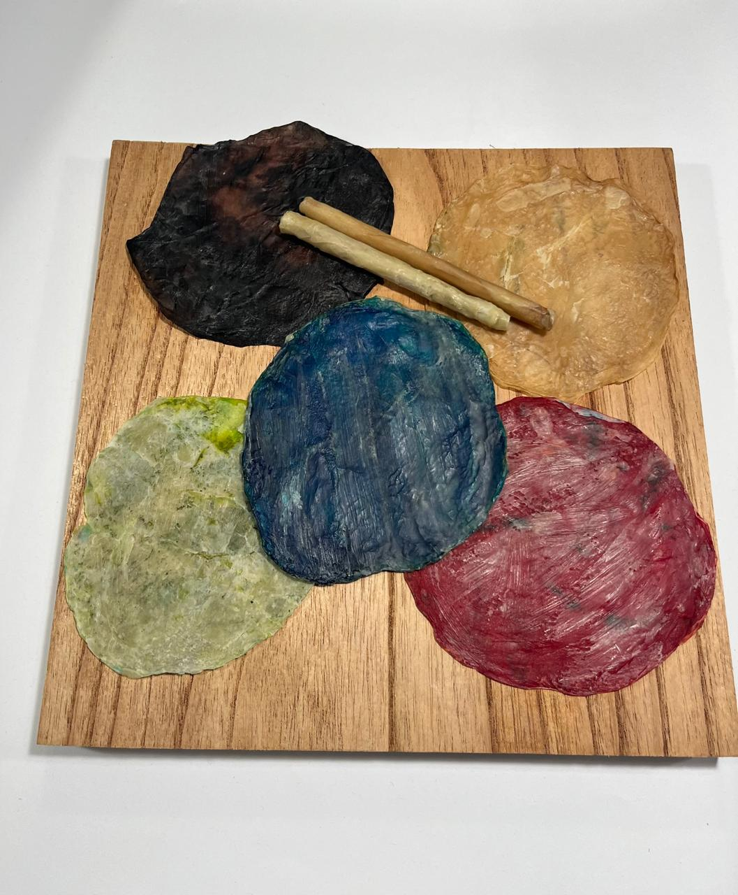
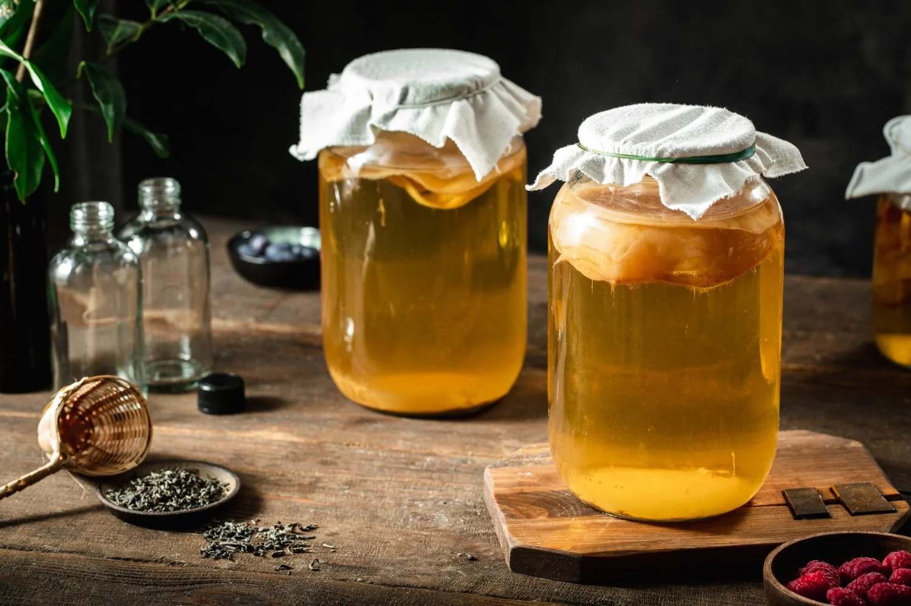
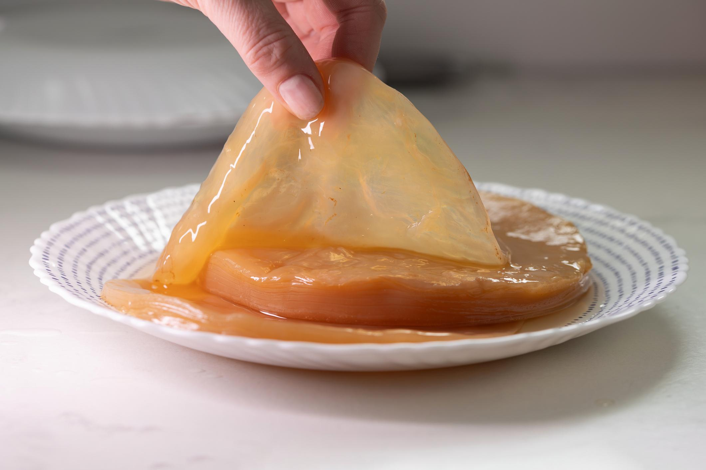
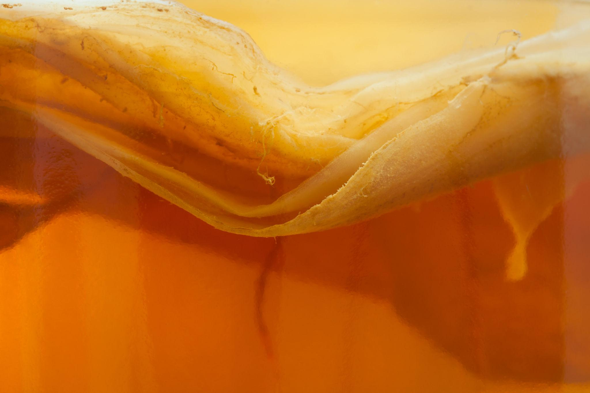
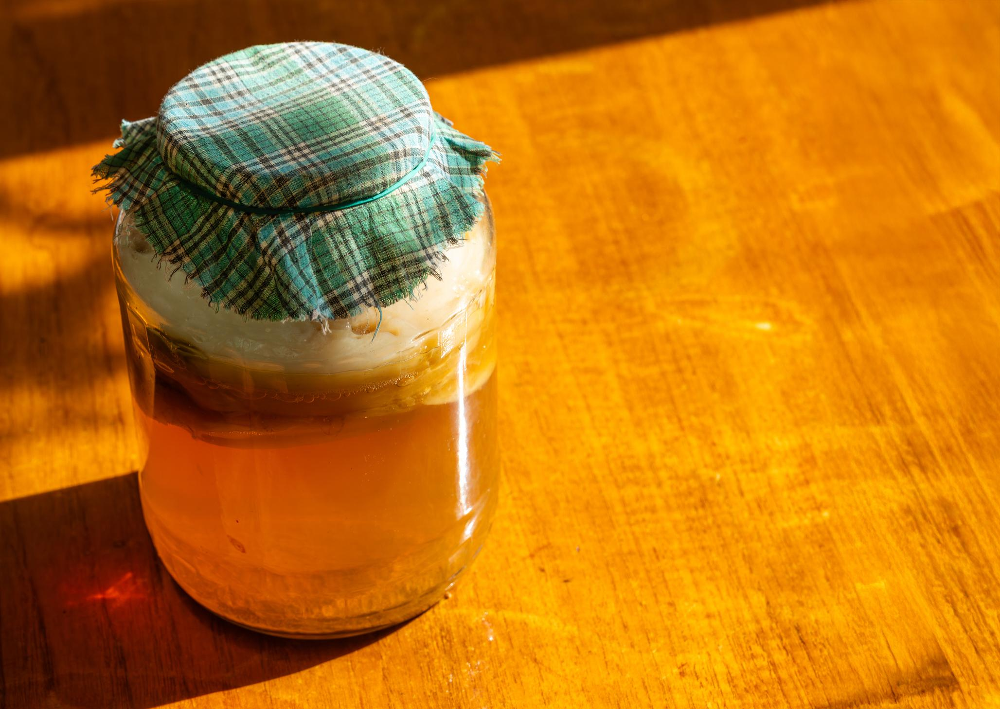
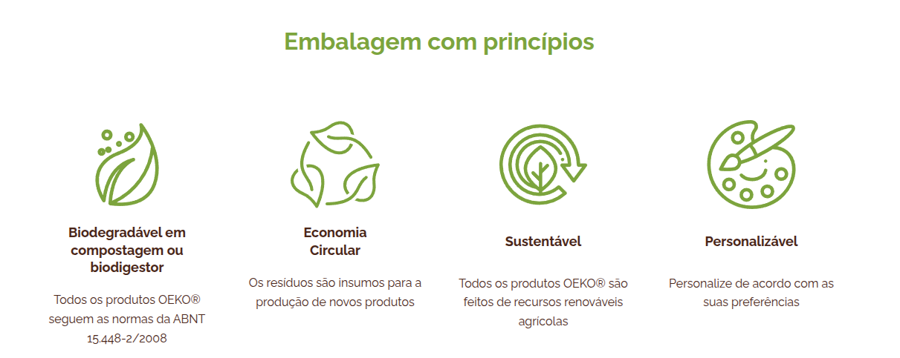
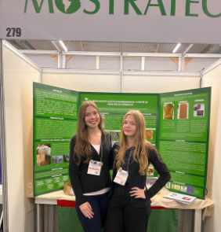

Embalagens sustentáveis
Saquinhos, bolsas e películas naturais.
Projeto Escola Aberta
Sustentável, biodegradável e inovador.
O que é?
A Bioplastech pesquisa o uso da celulose bacteriana formada na kombucha para desenvolver produtos ecológicos, naturais e compostáveis.

Saquinhos, bolsas e películas naturais.

Canudos e objetos de uso cotidiano.

Lâminas flexíveis e versáteis.
Processo
A celulose nasce durante a fermentação da kombucha, formando uma película que pode ser retirada, tratada, seca e transformada em novos protótipos.

O SCOBY se desenvolve no líquido e forma a base da celulose bacteriana.

A camada formada é retirada para estudo de textura, espessura e resistência.

O material é observado como uma matriz natural, flexível e translúcida.

Depois do preparo, a celulose pode virar filmes, revestimentos e objetos.
Sobre nós
Diante da crescente preocupação com os impactos ambientais causados pelo uso excessivo de plásticos derivados do petróleo, a Bioplastech surge como uma iniciativa de pesquisa e desenvolvimento de produtos ecológicos a partir da celulose da kombucha.
Nosso objetivo é reduzir a dependência de plásticos fósseis e ampliar a participação dos bioplásticos no mercado, que ainda representa apenas uma pequena parte da produção total de plásticos.
O plástico tradicional utiliza recursos não renováveis, leva centenas de anos para se decompor e pode liberar microplásticos que prejudicam solo, água, animais e saúde humana.
Produtos
As imagens reais mostram os testes desenvolvidos pela equipe: bolsa, canudos, lâminas e aplicações biodegradáveis.
Nosso diferencial
A equipe investiga o uso da cera de abelha como acabamento natural para aumentar a resistência à umidade dos protótipos, mantendo a proposta de baixo impacto ambiental.
Planejado para retornar ao ciclo natural.
Resíduos podem inspirar novos processos e produtos.
Desenvolvido a partir de recursos de origem biológica.
Permite estudar cores, formatos e texturas.
Embalagem com princípios
O projeto também apresenta princípios de embalagem sustentável: biodegradação, economia circular, uso de recursos renováveis e possibilidade de personalização.

Leia mais sobre o projeto
A apresentação reúne a base científica, os testes realizados e os próximos passos da Bioplastech.

Fale Conosco